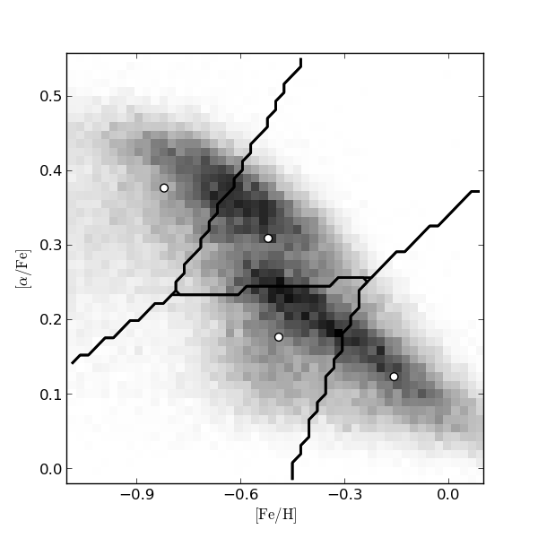

EM example: K-means¶
This shows an example of K-means clustering on the SDSS Segue Stellar Parameters Pipeline data

# Author: Jake VanderPlas <vanderplas@astro.washington.edu>
# License: BSD
# The figure produced by this code is published in the textbook
# "Statistics, Data Mining, and Machine Learning in Astronomy" (2013)
# For more information, see http://astroML.github.com
import numpy as np
from matplotlib import pyplot as plt
from matplotlib.patches import Ellipse
from scipy.stats import norm
from sklearn.cluster import KMeans
from sklearn import preprocessing
from astroML.datasets import fetch_sdss_sspp
#------------------------------------------------------------
# Get data
data = fetch_sdss_sspp(cleaned=True)
X = np.vstack([data['FeH'], data['alphFe']]).T
# truncate dataset for speed
X = X[::5]
#------------------------------------------------------------
# Compute a 2D histogram of the input
H, FeH_bins, alphFe_bins = np.histogram2d(data['FeH'], data['alphFe'], 50)
#------------------------------------------------------------
# Compute the KMeans clustering
n_clusters = 4
scaler = preprocessing.Scaler()
clf = KMeans(n_clusters)
clf.fit(scaler.fit_transform(X))
#------------------------------------------------------------
# Visualize the results
fig = plt.figure(figsize=(6, 6))
ax = fig.add_subplot()
# plot density
ax = plt.axes()
ax.imshow(H.T, origin='lower', interpolation='nearest', aspect='auto',
extent=[FeH_bins[0], FeH_bins[-1],
alphFe_bins[0], alphFe_bins[-1]],
cmap=plt.cm.binary)
# plot cluster centers
cluster_centers = scaler.inverse_transform(clf.cluster_centers_)
ax.scatter(cluster_centers[:, 0], cluster_centers[:, 1],
s=40, c='w', edgecolors='k')
# plot cluster boundaries
FeH_centers = 0.5 * (FeH_bins[1:] + FeH_bins[:-1])
alphFe_centers = 0.5 * (alphFe_bins[1:] + alphFe_bins[:-1])
Xgrid = np.meshgrid(FeH_centers, alphFe_centers)
Xgrid = np.array(Xgrid).reshape((2, 50 * 50)).T
H = clf.predict(scaler.transform(Xgrid)).reshape((50, 50))
for i in range(n_clusters):
Hcp = H.copy()
flag = (Hcp == i)
Hcp[flag] = 1
Hcp[~flag] = 0
ax.contour(FeH_centers, alphFe_centers, Hcp, [-0.5, 0.5],
linewidths=2, colors='k')
ax.xaxis.set_major_locator(plt.MultipleLocator(0.3))
ax.set_xlim(-1.101, 0.101)
ax.set_ylim(alphFe_bins[0], alphFe_bins[-1])
ax.set_xlabel(r'$\rm [Fe/H]$')
ax.set_ylabel(r'$\rm [\alpha/Fe]$')
plt.show()